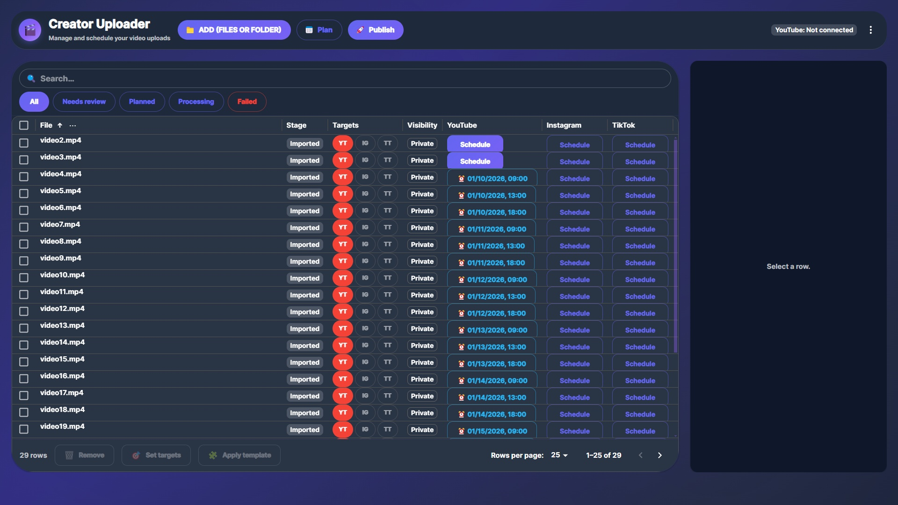
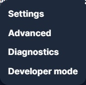
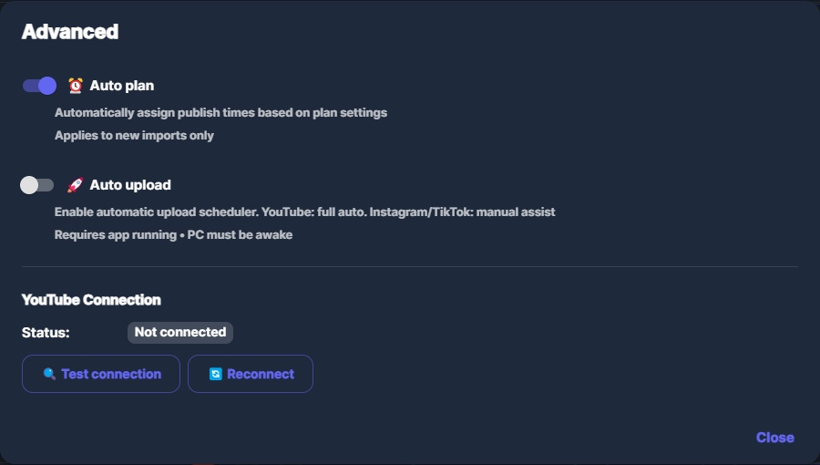
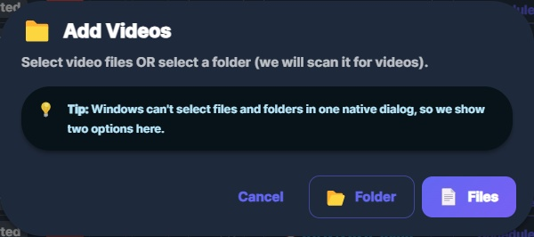
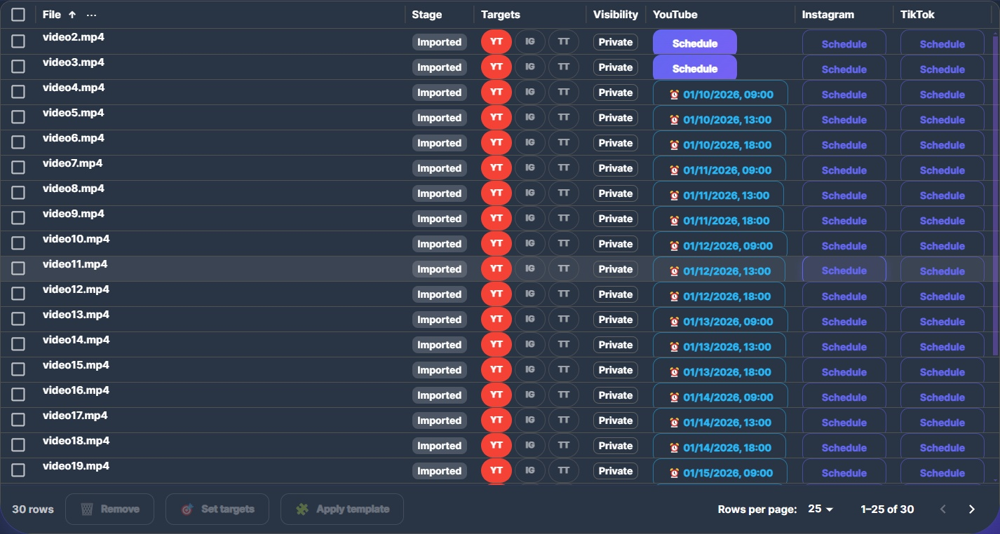
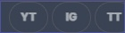
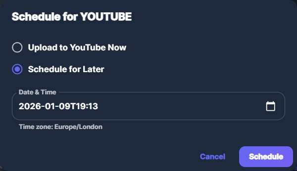
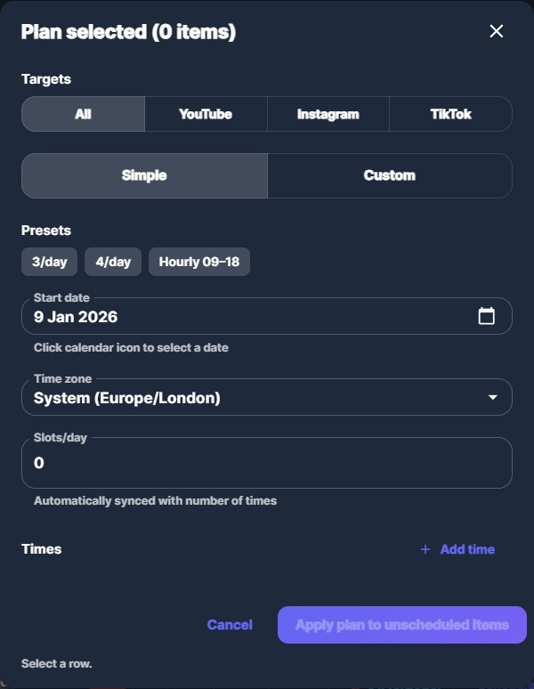

Acest ghid explică ce face aplicația, ce face fiecare funcție și cum o folosești corect pentru YouTube / Instagram / TikTok.








Publish este un flow “operational”: poți genera metadata și/sau porni upload/schedule. Recomandare: stabilește întâi Targets + Schedule, apoi folosește Publish/Auto Upload când ești gata.
Dacă npm run dev spune “Port 5173 is already in use”, închide procesul care ține portul:
netstat -ano | findstr :5173 taskkill /PID <PID> /F
google_oauth_client.json în userData.Dacă UI se schimbă, poți regenera imaginile (și ghidul rămâne up-to-date):
npm run guide:screenshots
Apoi deschizi:
docs/guide/index.html